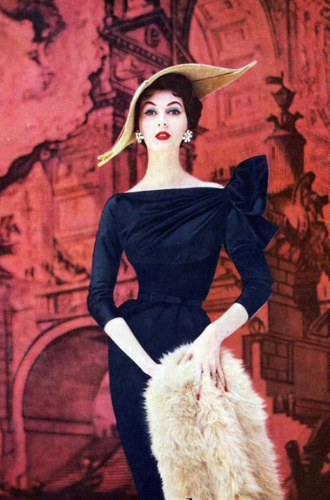
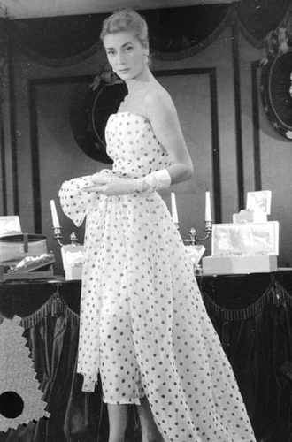

Вещи-легенды: модное наследие Кристиана Диора
Christian Dior – легендарный французский Дом Моды, основанный модельером Кристианом Диором 8 октября 1946 года. Всемирно известный бренд выпускает модную одежду, обувь, аксессуары, украшения, белье, косметику и парфюмерию, а также мобильные телефоны, мужские и женские часы
Карьеру модельера Кристиан начал, хлебнув в полной мере горя утраты близких, пережив банкротство семьи, тяжелую болезнь и нищету. Ему было 42, когда его давний друг, текстильный фабрикант Марсель Буссак, предложил финансовую помощь на открытие собственного модного Дома. Творить Диору предстояло всего 10 лет… Целых 10 лет. За это время ему удалось сделать так много для мира моды и для женщин в частности, сколько посчастливилось далеко не каждому талантливому кутюрье на протяжении всей жизни. Неожиданная смерть в 52 года не стала финалом модной империи Dior. Напротив, его ДНК, эстетика и философия, его концепция создали высокий стиль Christian Dior, узнаваемый во все времена независимо от того, кто в разные годы управлял наследием великого мэтра. Маленький принц моды Ив Сен-Лоран, чья карьера началась именно в этом волшебном месте, эксцентричный Джон Гальяно или сдержанный Раф Симонс.
ЖЕНЩИНА-ЦВЕТОК, ИЛИ НОВЫЙ ВЗГЛЯД
Женщина Кристиана Диора — женщина-цветок. Этим сказано все: и его необыкновенная любовь к цветам, и трепетное отношение к женщинам, и тонкое чувство эстетики Прекрасного. Его главной музой была мама, она славилась красотой и элегантностью, запомнилась сыну красивыми платьями и роскошными ароматами. Именно она привила юному Кристиану страсть к цветам, которая никогда не покидала жизнь и творчество кутюрье. Именно в ней Диор видел идеал женщины, жены, безупречной леди.
Неудивительно, что именно цветам Кристиан Диор посвятил свою первую знаменитую коллекцию, с легкой руки главного редактора Harper’s Bazaar Кармел Сноу названную New Look. Начинающий модельер отнюдь не стремился совершить революцию. Скорее, мечтал вернуть женщине былую женственность и роскошь после тяжелых лет войны и скромной, аскетичной одежды. Однако это были уже не те архаичные кринолины и корсеты, а Новый Взгляд. «Я рисовал женщин, которые напоминали цветы, нежно-выпуклые плечи, округлые линии груди, лианоподобные стройные талии и широкие, расходящиеся к низу, как лепестки цветов, ягодицы», — как нельзя точно описывал модельер образ новой женщины. «Грудь нимфы, талия Сильфиды и юбка из тысячи складок, на которую пошло 80 метров белого фая, водоворотом ниспадающего чуть ли не до щиколоток», — один из любимых образов кутюрье.
На фоне послевоенной нищеты роскошь от Диора вызвала волну протеста. Во время фотосессий на парижских улицах женщины набрасывались на хрупких манекенщиц и рвали в клочья изысканную одежду. Диор же не считал, что мода должна быть доступной всем. Ведь мода — это произведение искусства. Когда смотришь на знаменитые полотна великих художников, не должно приходить в голову желание уничтожить картину только потому, что возможности обладать ею нет.
Сам того не подозревая, Диор создал роскошь, доступную абсолютно всем женщинам мира, в том числе и советским. И хотя мода до нас доходила с десятилетним опозданием, сложно представить себе девушек-стиляг 60-х, у которых не было хотя бы одного платья в стиле Кристиана Диора.
ЖАКЕТ LE BAR
Уникальный жакет был представлен публике в 1947 году в той самой коллекции New Look. Сегодня его парафраз является must-have любого современного гардероба, поскольку создает особенную архитектуру женского тела, конструирует безупречные женственные линии. Баска жакета прекрасно сидит на любой фигуре: узкие бедра она делает визуально пышнее, талию — тоньше, а «богатые» бедра — стройнее.
Вообще, художник конструировал одежду по всем законам зрительного восприятия, использовал визуальные иллюзии, которыми сегодня столь успешно пользуются лучшие стилисты мира. Подобно Пигмалиону, Диор лепил свою Галатею, подобно Микеланджело, отсекал все, что мешает безупречному женскому силуэту. Сам маэстро предлагал носить жакет с пышной юбкой или юбкой-карандаш длины миди. Однако современные тенденции предлагают куда больше вариаций. Достаточно вспомнить знаменитую дебютную кутюрную коллекцию Рафа Симонса для Dior, представленную в музее Родена, стены которого были полностью декорированы живыми цветами. Розы, орхидеи, лилии были призваны разделять разные залы, создавать прекрасную чувственную торжественную атмосферу, а еще благоухать за несколько кварталов и придавать собственный неповторимый аромат коллекции во всех смыслах. И во всем этом великолепии прекрасные феи дефилировали в брюках и легендарных жакетах на современный лад.
ПЫШНАЯ ЮБКА
Чем пышнее юбка, тем стройнее талия и изящнее щиколотки. Это еще один прием визуальной коррекции фигуры. Думал ли об этом великий кутюрье? Трудно сказать. Однако совершенно очевидно, что Кристиан Диор любил женское тело, восхищался им и заботился о нем. Актуальна ли сегодня пышная юбка? Вопрос, не требующий ответа даже для далекого от мира моды человека. Сегодня ее носят с рубашками, джинсовыми куртками, майками, свитерами и косухами.
ЮБКА-КАРАНДАШ
Неизменная часть знаменитого силуэта Christian Dior – изящная юбка-карандаш длиной чуть ниже колена. Созданная Диором с целью подчеркнуть соблазнительные изгибы женского тела, она и по сей день считается эталоном элегантности и стиля. Носить ее кутюрье предлагал с барным пиджаком или с облегающим топом.
ПРИНТ "ГОРОХ"
Этот милый рисунок появился задолго до того, как Кристиан Диор пришел в мир моды. Однако именно Диор популяризировал узор Dots, или в английском варианте «Polka dot», сделав его общепризнанной классикой 50-х годов. Горошку мэтр посвятил свою коллекцию платьев 1954 года. С его легкой руки горох охватил весь мир, начиная от американских звезд и заканчивая домохозяйками и даже советскими женщинами.
